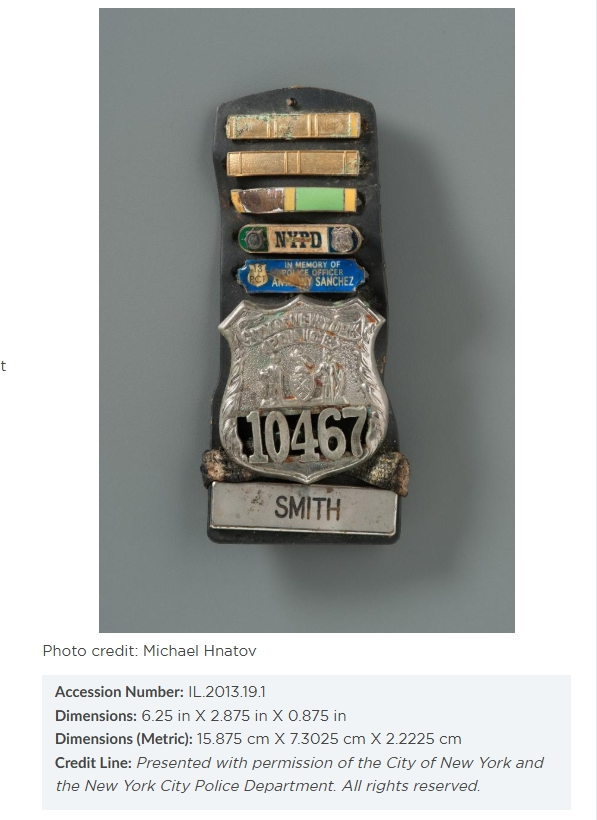
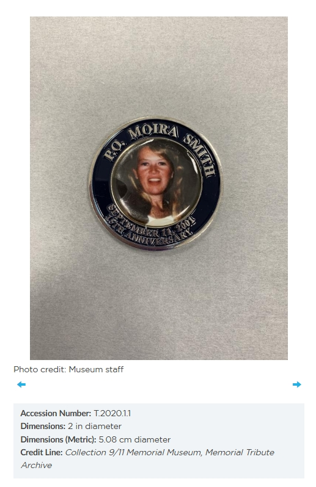

★ Founding 250 · First Responder · NYPD · September 11, 2001
Police Officer Moira Smith
New York City Police Department · 13th Precinct, Manhattan · Shield No. 10467
She was the first officer on the radio reporting the attack. She guided hundreds out of the South Tower. She went back in every time. She kissed her two-year-old daughter goodbye that morning, and she never came home — because she would not stop going back for one more person.
Officer Moira A. Smith · Shield No. 10467 NYPD 13th Precinct · New York City The only female NYPD officer killed on September 11, 2001
Department
New York City Police Department
Assignment
13th Precinct Manhattan
Service
1988–2001 13 years
Action
South Tower World Trade Center
Born
Bay Ridge, Brooklyn New York
Killed in the Line of Duty
September 11, 2001 Age 38
Decorations
★
NYPD Medal of Honor
Posthumously awarded — the department’s highest decoration for valor
★
Distinguished Duty Medal
Awarded 1991 — subway crash at Union Square — dozens of lives saved
★
Glamour & Ms. Woman of the Year
Both magazines — 2001 — posthumous recognition
★
01
The Girl from Bay Ridge
She grew up in Brooklyn knowing exactly who she was.
Moira Ann Reddy was born and raised in Bay Ridge, a tight-knit Irish-Catholic neighborhood in southwest Brooklyn where the harbor was visible from the hills and the sense of community ran deep. Her mother was from Dublin. She graduated from Our Lady of Angels School, then Our Lady of Perpetual Help High School — the kind of education that plants deep roots in duty, faith, and service to others.
She was, by every account of those who knew her, the life of every room she entered. Fun-loving, warm, quick with a laugh, able to talk with absolutely anyone for hours. She even joked about her maiden name — Reddy — telling people it meant she was “ready for anything.” She was not wrong.
In 1988, Moira Reddy joined the New York City Transit Police Department. She was twenty-five years old. She wanted to serve her city. It was, for her, that simple. In 1997, when the Transit Police merged with the NYPD, she was assigned to the 13th Precinct in Manhattan — the neighborhood around Gramercy Park and the Flatiron District — where she would spend the last four years of her career and her life.
She married James Smith, a fellow NYPD officer. They had a daughter named Patricia. She was, by the morning of September 11, 2001, a thirteen-year veteran of New York law enforcement, a decorated officer, a wife, and the mother of a two-year-old girl.
13
Years on the force
2
Patricia’s age that morning
1
The only female NYPD officer killed on 9/11
★
02
Union Square, August 1991
She had already done this before. That is what people do not know.
On the morning of August 27, 1991, Officer Moira Smith was finishing an eight-hour overnight shift in the subways when she heard it — the crash and groan of twisting metal below her feet at Union Square Station. She ran toward the sound.
What she found was the worst New York subway disaster in over sixty years. A subway train had derailed. Five passengers were killed. More than 130 were injured. The scene underground was chaos: darkness, smoke, wreckage, screaming, trapped bodies.
Moira Smith, three years on the job, just off a full shift, ran toward it anyway. She spent the next sixteen hours in that wreck — pulling survivors out, setting up triage, directing the injured to safety, working without stopping in conditions that would have broken most people before the second hour.
The NYPD awarded her the Distinguished Duty Medal — the department’s recognition that what she had done that day was extraordinary. She accepted it and went back to work.
Ten years later, she would do it again. Only this time, the building would not stop falling.
A decade earlier, with just three years on the job, Moira pulled survivors from the wreckage when a train derailed. She also responded when a bomb exploded in a subway car on Fulton Street. Moira was a natural first responder with courage to spare.
— NYPD Commissioner Raymond W. Kelly, Madison Square Park dedication ceremony, March 10, 2012
★Photo: Officer Smith in uniform / 13th PrecinctReplace with: moira-smith-uniform.jpg
★
03
8:46 A.M. September 11
She was the first officer on the radio. She never stopped moving after that.
On the morning of September 11, 2001, Officer Moira Smith kissed her two-year-old daughter Patricia goodbye and left for the 13th Precinct. Her husband Jim, who had worked the night shift, was home. He and Patricia spent the morning watching Winnie the Pooh on the VCR, unaware.
At 8:46 a.m., American Airlines Flight 11 hit the North Tower of the World Trade Center. Moira Smith looked up into the clear blue sky, saw what had happened, and immediately got on the radio. She was the first NYPD officer to report the attack. Then she ran toward Lower Manhattan.
What she found at the World Trade Center was not an evacuation system — it was a collapsing structure, a mass of disoriented civilians, and a situation that no training manual had ever prepared anyone for. The South Tower had been struck at 9:03 a.m. Thousands of people were trying to get out. The stairwells were jammed. The Plaza was chaos. There was no one in charge of the ground-level flow.
Moira Smith became that person.
She was barking out instructions. ‘Don’t look! Don’t look! Keep moving, don’t use your cellphone. Keep moving!’ I got about five minutes away when the building went down. I turned around just to see it fall. I thought of her right away.
— Martin Glynn, survivor, South Tower Plaza Level, September 11, 2001
★Photo: World Trade Center / South Tower, September 11, 2001Replace with: wtc-south-tower-sept11.jpg — U.S. Government / public domain
★
04
She Kept Going Back
Every time she got someone out, she turned around and went back in.
Survivor accounts of Officer Moira Smith that morning describe the same pattern, documented by memorial researchers, survivor testimony, and the 9/11 Commission’s supporting materials: she did not simply direct people out once. She guided someone to safety — and then she went back into the building for more.
At the base of an evacuation ramp, she stood with her flashlight raised like a baton, waving it in steady arcs, repeating the same words over and over to hundreds of people moving past her: Don’t look. Keep moving. She had assessed the situation instantly: groups of people were stopping in the plaza, staring at the horror around them, blocking the exit paths and triggering panic. She broke the bottleneck and kept it clear. She was, as one survivor described it, the human lighthouse — the fixed, calm point around which chaos organized itself.
The mass of people exiting the building felt the calm assurance that they were being directed by someone in authority who was in control of the situation. Her actions even seemed ordinary, even commonplace. She insulated the evacuees from the awareness of the dangerous situation they were in, with the result that everything proceeded smoothly. In my company — sixty-one people perished. One hundred and eighty survived.
— Eyewitness survivor account, South Tower evacuation ramp, September 11, 2001 — moirasmith.com
One of those she physically guided out was Edward Nicholls, a broker at Aon Corporation, bloodied and battered, one of the few people to escape the South Tower’s Sky Lobby alive. A photographer captured the moment: Officer Smith, in full uniform, her face steady and focused, guiding a wounded man through the smoke and dust toward safety. Her husband Jim would later say, looking at that photograph — the last image ever taken of his wife alive — that he could see the courage and empathy in her face. After she got Nicholls to safety, she turned around and went back inside.
The Last Photograph
A photographer was there. He captured her in that moment — in full uniform, steady and focused, one hand guiding a bloodied man through the smoke and dust toward the street. The man is Edward Nicholls. He is covered in debris. She is not. Her face, her husband Jim would say years later, shows courage. It shows empathy. It is the last photograph ever taken of her alive.
After she got him to the sidewalk, she turned around. She went back in.
Image available — Getty Images · Search: “Moira Smith Edward Nicholls” · License pending
She went back in again. And again. Survivor testimony and the National September 11 Memorial & Museum confirm multiple re-entries. NYPD Commissioner Raymond W. Kelly, at the playground dedication ten years later, said simply: “Each time she left to help someone, she went back in — no doubt, she saved hundreds on September 11th.”
At 9:59 a.m., the South Tower collapsed.
Moira Smith was inside.

Shield No. 10467 — The recovered badge of Police Officer Moira Ann Smith, on permanent display at the National September 11 Memorial & Museum, New York City. Photo: Michael Hnatov · Accession No. IL.2013.19.1 · Presented with permission of the City of New York and the New York City Police Department — Permission pending for archival use · TheBestofAmerica.org
9:59
A.M. — South Tower collapsed
100s
Lives credited to her actions by NYPD Commissioner
March 2002
Her remains were finally recovered
★
05
Why She Belongs Here
Patricia grew up knowing her mother’s name mattered. This archive makes sure of it.
For months after September 11, Moira Smith’s remains were not found. Her husband Jim brought two-year-old Patricia to Ground Zero for memorials. Patricia, too small to understand, saluted her mother’s casket when it was finally brought out of Our Lady of Lourdes Church in Queens in March 2002 — on what would have been Moira’s 39th birthday. The photograph of that two-year-old saluting is one of the most heartbreaking images of the entire aftermath of September 11.
Patricia grew up. She went to the University of Alabama. She became an athletic trainer for the Tulane University football team in New Orleans. She wears a pendant around her neck with her mother’s name spelled out in gold cursive letters, and she says she’s afraid to lose it. Her mother’s actual badge — Shield No. 10467, scratched and dented — is on permanent display at the National September 11 Memorial & Museum.
My family always described my mom as the life of the party. She was always able to bring up anyone’s mood and could talk to anyone about anything for hours. That’s why she really loved her job and doing what she could to give back to her community.
— Patricia Smith, daughter of Officer Moira Smith, University of Alabama, 2019
New York City named a playground for her — the Police Officer Moira Ann Smith Playground in Madison Square Park, dedicated March 10, 2012, in the territory of the 13th Precinct where she worked. A high-speed East River ferry was christened the Moira Smith in February 2002, with two-year-old Patricia aboard for the ceremony. A portrait by renowned Irish artist Jim Fitzpatrick hangs in the 13th Precinct stationhouse. Her name is inscribed at the National September 11 Memorial alongside the 22 other NYPD officers who died that day — the only woman among them.
Glamour magazine named her Woman of the Year. Ms. magazine named her Woman of the Year. The NYPD’s Policewomen’s Endowment Association named her Woman of the Year. The department awarded her its Medal of Honor — posthumously, as it had to be.

Commemorative tribute coin honoring P.O. Moira Smith · September 11, 2001 · 20th Anniversary · Collection of the 9/11 Memorial Museum, Memorial Tribute Archive · Accession No. T.2020.1.1 · Photo: Museum staff — Permission pending for archival use · TheBestofAmerica.org
The Best of America™ Archive records Officer Moira Smith’s name here because this archive exists for exactly this reason: to make sure the people who ran toward the fire are never reduced to a number on a wall. She was a girl from Bay Ridge who became a woman who could not stop helping people — not in a subway wreck, not in a burning tower, not even when the building was coming down around her. She was thirty-eight years old. She had a daughter who needed her. She went back in anyway.
That is The Best of America. And Patricia Smith deserves to know that her mother’s name is here — not just on a badge behind glass, but in an archive built to make sure it is never forgotten.
Archived in Permanent Honor
“Each time she left to help someone, she went back in — no doubt, she saved hundreds on September 11th.” She kissed her daughter goodbye that morning. She kept going back until the building would not let her anymore. The Best of America™ will not forget her.”
Police Officer Moira Ann Smith · Shield No. 10467 · NYPD 13th Precinct · September 11, 2001
This profile has no sponsor yet — and heroes like Officer Smith deserve to be remembered forever.